Ozone, an allotrope of oxygen, is a 1,3-dipole that undergoes [4s + 2s] cycloaddition to alkenes. The structure of ozone may be written as a resonance hybrid of zwitterionic structures, as shown here. Although the energetically favored structures on the left are 1,2-dipoles, ozone can only react as a terminal 1,3-dipole, since the central oxygen has a filled valence shell.
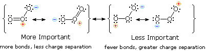
The initial product of ozone cycloaddition to an alkene is called a molozonide. Molozonides are very unstable and rapidly decompose; nevertheless, spectroscopic evidence for the transient existence of a molozonide has been obtained at -100 ºC. The manner in which molozonides decomposes has been the subject of many investigations. As shown in the following diagram, it is usually depicted (the Criegee mechanism) as a concerted cycloreversion leading to a carbonyl fragment and a zwitterionic species, sometimes referred to as a carbonyl oxide. Calculations indicate an activation energy of 20 kcal/mol or less for such a transformation. An alternative cleavage of one of the two very weak O–O bonds in the molozonide, followed by immediate fragmentation of the resulting diradical would lead to equivalent intermediates. The zwitterionic intermediate is a 1,3-dipole of the same type as ozone; however, it prefers to cycloadd to carbonyl functions rather than alkene double bonds. In this way an isomeric ozonide, known as a Staudinger ozonide, is formed. Such ozonides are much more stable than their molozonide precursors, and in some cases may be isolated as pure crystalline compounds. In general, ozonides must be handled with care, since they may decompose explosively. If ozonolysis is carried out in an alcohol solvent, instead of the customary methylene chloride solvent, the dipolar carbonyl oxide may be trapped as the α-hydroperoxide of an ether. The reaction of styrene, shown below the green line, is an example. In the case of unsymmetrical alkenes such as styrene, the carbonyl oxide zwitterion is stabilized by alkyl substituents on the positively charged carbon, and the fragmentation of the molozonide favors this intermediate. Likewise, nearby electron withdrawing substituents destabilize the carbonyl oxide species.
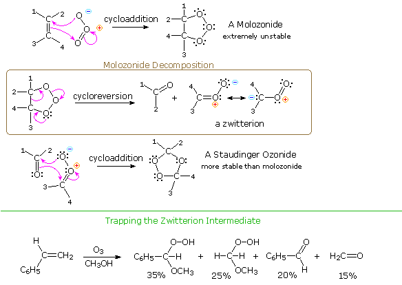
In addition to the alcohol trapping results, there is a growing body of evidence supporting key elements of the mechanism shown here. Some examples will be displayed above by clicking on the mechanism diagram. Thus, the carbonyl oxide zwitterion undergoes cycloaddition reactions with extraneous carbonyl compounds, as shown by ozonide C in equation 1. Although two zwittterions could combine to give a dimeric bis-peroxide, the extreme reactivity of these intermediates makes such an encounter improbable, compared with other reactive interactions. Dialkyl substitution serves to improve the stability of the carbonyl oxide, and in the case of reaction 1, the bis-peroxide B is obtained in small amounts together with the ozonides A and C. Intramolecular recombination of the carbonyl and carbonyl oxide fragments is usually favorable, as the ozonolysis of cyclopentene (equation 2) demonstrates. The bicyclic [3.2.1] ozonide is obtained pure in yields up to 80%. Curiously, cyclohexene does not yield a similar monomeric ozonide, but instead, an assortment of oligomeric ozonides and peroxides. An explanation for this behavior may reside in the configuration of the intermediate carbonyl oxide zwitterion. Just as oximes and other imine derivatives may exist in syn and anti stereoisomeric configurations, the RHC=O–O grouping may adopt similar structures. The resonance description of a carbonyl oxide is presented in the gray shaded box above. Of the four Lewis structures shown, the most favorable is clearly the one on the left. The C=O–O unit is planar and bent, with a bond angle ca. 120 º. If the barrier to rotation (or inversion) about the C=O bond is sufficiently high, the carbonyl oxide will have a distinct configuration relative to the substituents on carbon. The example shown here is syn. If a syn configuration of the carbonyl oxide is required for intramolecular cycloaddition of short chains, and the cyclohexene molozonide fragments to an anti isomer, its failure to form a monomeric ozonide is understandable. A beautiful demonstration supporting this explanation will be displayed above by clicking on the mechanism diagram a second time. Cyclopentene and cyclohexene derivatives, each carrying an appropriately sized, deuterium labeled, aldehyde substituent, were ozonized in methylene chloride at -78 º.C. Molozonide fragmentation in each case produces a carbonyl oxide having two equal length aldehyde chain substituents. Unlike the unsubstituted examples noted above, both compounds lead to monomeric ozonides in good yield. If the carbonyl oxide intermediate is formed in a stereo-random fashion, or if the isomeric forms are rapidly interconverted, then the deuterium label will be scrambled between the bridgehead location and the remaining aldehyde side chain. The data presented in the diagram clearly demonstrates stereoselective fragmentation of each molozonide and a strong preference for syn-cycloaddition.
Equation 1 in the following diagram illustrates formation of a typical carbonyl oxide intermediate by oxygen addition to a carbene, generated by photochemical elimination of nitrogen from a diazo compound. This carbonyl oxide exhibits the same reactivity as those formed by ozonolysis, including cycloaddition to an aldehyde carbonyl function. In the same manner, a sufficiently stable carbonyl oxide species, permitting spectroscopic characterization, was prepared recently, as shown in equation 2. Although still highly reactive, this intermediate could be examined in solution at temperatures below -80 ºC. Further irradiation isomerized the zwitterion to its neutral dioxetane isomer, shown on the right. Despite the apparent ring strain of this compound, it is stable up to 20 ºC and could be crystallized. Spectroscopic and X-ray diffraction data confirm the structure shown here.
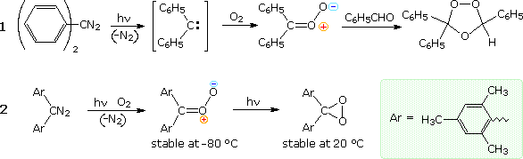
In most synthetic applications of ozonolysis, oxidative or reductive decomposition of the Staudinger ozonide to carbonyl products or their acetal derivatives is the final stage of the reaction. Two common methods employed in such work-up were described in an earlier section of this text, and many others have proven useful. For example, quenching the ozonolysis reaction mixture in a THF solution of lithium aluminum hydride results in reduction of both carbonyl moieties to alcohols. A particularly useful set of conditions that permit two symmetrically equivalent aldehyde functions to be released in different forms or oxidation states is shown in the following diagram. These procedures all begin with a low temperature ozonolysis in the presence of methanol. Once the double bond is completely converted to the initial ozonide product, as evidenced by the characteristic blue color of unreacted ozone, the excess ozone is removed by a stream of nitrogen. At this point one of the aldehydes is free and the other exists in the form of an α-hydroperoxide methyl ether. In procedure A, addition of p-toluenesulfonic acid converts the free aldehyde to a dimethyl acetal. The acid catalyst is then neutralized with sodium bicarbonate, and the hydroperoxide is reduced to a hemiacetal by treatment with dimethyl sulfide, a generally useful reductant for ozonides or peroxides. This reduction is shown by the upper equation in the blue shaded box.
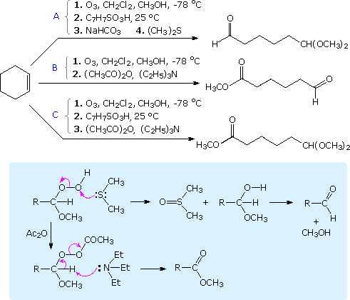
Following the initial ozonolysis, procedures B and C proceed by first removing excess methanol as a benzene azeotrope. The key reaction in both cases is an eliminative oxidation of the α-hydroperoxide methyl ether, as shown by the bottom reaction in the shaded box. This reaction is effected either immediately (conditions B) or following acetal formation as in procedure A (conditions C).
This page is the property of The Edvibe Team. Comments, questions and errors should be sent to contact@edvibe.co.ke. These pages are provided to the IOCD to assist in capacity building in chemical education. 05/05/2013
Benzyne, C6H4, is but one member of a group of highly reactive intermediates known as arynes. Several elimination procedures for the preparation of benzyne itself from ortho derivatives of benzene have been recorded, and typical examples are shown in the following diagram. As might be expected, the chief mode of reaction displayed by benzyne, and in general by arynes, is addition. Examples of such reactions will be displayed below by clicking on the diagram. Because benzyne (and other arynes) is a powerful dienophile, many of its addition reactions are cycloadditions. Note the pyridyne analog of benzyne in the bottom equation.
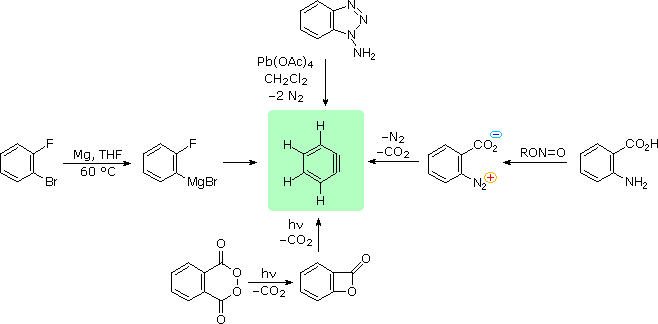
Arynes and diarynes have been put to use in the synthesis of multi-bridged aromatic ring molecules called iptycenes. A few examples are given in the following diagram. By clicking on the diagram, an application of aryne cycloaddition to a natural product synthesis will be displayed. In this case the aryne intermediate cycloadds to the substituted furan in a highly regioselective fashion, as shown in brackets. The initial adduct then undergoes a rapid eliminative ring opening to a naphthalene derivative.
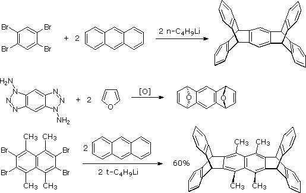
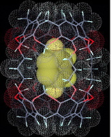
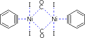
To examine a molecular model of benzyne Click Here.
Two commonly used reagents for the oxidation of 1º- and 2º-alcohols are PCC and PDC. The following diagram displays some of the selective and synthetically useful reaction that these oxidants can achieve. The first display consists of PCC reactions, and on clicking the diagram a set of PDC reactions will appear. The aggressive nature of PCC is apparent in examples 1, 3, 4 & 6. Because of its acidic nature, PCC may induce cyclization to a nearby alkene (1), rearrangement of allylic 3º-alcohols (3 & 4), or an equivalent ring opening rearrangement of strained rings (6). Buffering with sodium acetate helps to reduce acid-related events, as in example 2. In the absence of sensitive functions, this reagent is the best choice for the straightforward conversion of alcohols to aldehydes and ketones.
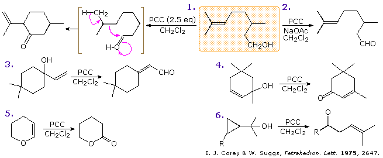
PDC is a milder and more selective oxidant, as the examples on the second display demonstrate. As a rule, PDC oxidations are slower and may be catalyzed by a few drops of acetic acid. Allylic alcohols are oxidized much faster than corresponding saturated compounds, as evidenced by the prostaglandin in reaction 9. A curious solvent effect is observed for PDC oxidations. In methylene chloride solution the reaction of 1º- and 2º-saturated alcohols proceeds as expected but slowly (8 & 10). In DMF (N,N-dimethylformamide) 1º-alcohols are oxidized to carboxylic acids (7), and with added alcohol to esters (11). The mild nature of this reagent is demonstrated by the survival of the sensitive enol ether group in reaction 10.
The conversion of 1º and 2º-alcohols to aldehydes and ketones, in its simplest form, can be considered a dehydrogenation (loss of H2). By providing an oxygen source to fix the product hydrogen as water, the endothermic dehydrogenation process may be converted to a more favorable exothermic one. One source of oxygen that has proven effective for the oxidation of alcohols is the simple sulfoxide solvent, DMSO. The reaction is operationally easy: a DMSO solution of the alcohol is treated with one of several electrophilic dehydrating reagents (E). The alcohol is oxidized; DMSO is reduced to dimethyl sulfide; and water is taken up by the electrophile. An amine base such as triethyl amine or pyridine is usually present in equimolar amount. Due to the exothermic nature of the reaction, it is usually run at -50 ºC or lower. Co-solvents such as methylene chloride or THF are needed, since pure DMSO freezes at 18º. Although the dimethylsulfide byproduct has an unpleasant odor, it is easily rendered inoffensive by oxidation with sodium hypochlorite (Chlorox). A plausible general mechanism for this interesting and useful reaction is drawn below.
Because so many different electrophiles have been used to effect this oxidation, it is unreasonable to propose a single universal mechanism. Most of the electrophiles are good acylating reagents, so one can expect an initial acylation of the sulfoxide oxygen. (The use of DCC as an acylation reagent was described elsewhere.) Acylation enhances the electrophilic character of the sulfur atom. Bonding of the activated sulfur to the alcohol oxygen atom then follows. The remaining steps are eliminations, similar in nature to those proposed for other alcohol oxidations. The most commonly used DMSO oxidation protocol is known as the Swern Oxidation. In this procedure oxalyl chloride reacts with DMSO at low temperature to form chlorodimethylsulfonium chloride, (CH3)2SCl(+) Cl(–), which is the reactive species that oxidizes the alcohol. By clicking the above diagram, a mechanism for the Swern oxidation will be displayed. Several variations of the final elimination have been proposed, and two are shown within the bottom center bracket.
Three examples of these DMSO oxidations are given in the following diagram. Note that this oxidation procedure is very mild and tolerates a variety of other functional groups, including those having oxidizable nitrogen and sulfur atoms.
Hypervalent iodine compounds have proven to be effective oxidation reagents, Among the most commonly used of these is DMP, preparation of which from ortho-iodobenzoic acid is shown at the top of the following diagram. The alcohol to be oxidized is simply mixed with the periodinane in methylene chloride solution and stirred at room temperature. 1º-Alcohols give aldehydes and 2º-alcohols give ketones. The reagent and conditions are tolerant of many sensitive functions, such as acetals and silyl ethers. Two examples are shown in the diagram. A plausible mechanism is drawn on the right. The chief disadvantages of the Dess-Martin procedure are the explosive character of the IBX intermediate and the commercial cost of DMP, assuming the user does not wish to prepare it.
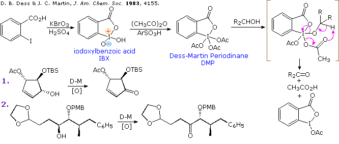
The more sensitive iodoxyl species (IBX) may be used directly as an oxidant, but it is relatively insoluble in nonpolar solvents. Nevertheless, it has been used to prepare ortho-quinones from para-substituted phenols, as shown in examples 3 and 4, displayed on the left above by clicking the diagram. Since ortho-quinones are quite reactive, they are normally not isolated, but are used in situ for various subsequent reactions. Quinones and azaquinones have also been synthesized from anilides by oxidation with DMP in mixed solvents, examples 5 and 6. In all these cases the substrate must have electron rich aromatic rings, and this method provides a useful alternative to Fremy's salt oxidations.
Allylic and benzylic alcohols may be oxidized selectively by a suspension of activated manganese dioxide in suitable organic solvents. Two examples are shown below. Similar oxidations have been effected by barium permanganate, as shown in the third example.
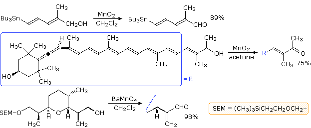
Chromium based oxidants are useful in the research laboratory, but their large scale use generates toxic heavy metal waste products that must be disposed of carefully. Other oxidation reagents may be expensive, unstable or otherwise problematic. In such situations, a fruitful strategy is to use small (catalytic) quantities of the effective oxidant together with stoichiometric amounts of a cheap and non-toxic oxidizing agent that is able to reform the active oxidant from its reduced state. In the case of chromate reagents, one example of this approach is the reaction presented at the top of the following diagram. Here, the cyclic chromate DMPDC acts to effect the oxidation of cyclooctanol, and the reduced metal is reoxidized to Cr(VI) by the peracid. In a variant of this procedure, excess peracid causes a Baeyer-Villiger rearrangement of the initial ketone product to form a lactone. Ruthenium tetroxide is a powerful, non-selective oxidant; however, the related tetra-n-propylammonium perruthenate anion, TPAP, is a mild and selective oxidizing agent that is soluble in many organic solvents. Although the reagent may be used in stoichiometric quantities (example 2), its expense (ca. $100 per gram) and potential heavy metal problems have led to catalytic applications in which N-methylmorpholine-N-oxide, NMO. serves as the stoichiometric oxidant. Amine oxides are stable weak oxidizing agents that are tolerant of most sensitive functional groups. The water formed in the oxidation must be sequestered so it does not inhibit the catalyst, a function served by 4 Å molecular sieve in reactions 3 and 4.
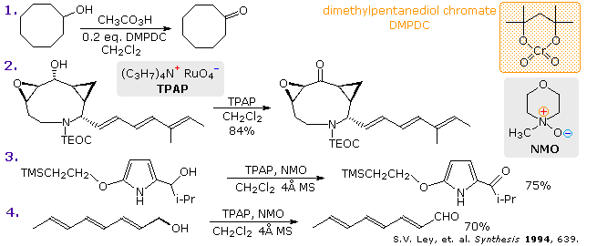
Unstable N-oxoammonium salts are mild and selective oxidizing agents that are easily generated in situ from nitroxyl radicals such as TEMPO. This reactivity is outlined at the top of the new display activated by clicking on the above diagram. The stoichiometric co-oxidant used in such reactions include sodium hypochlorite (reaction 5), peresters, sodium bromite, oxone (reaction 6) and iodobenzene diacetate, another hypervalent iodine compound used in reaction 7. The use of oxone as a stoichiometric co-oxidant needs to be elaborated. This triple salt, derived from Caro's acid (peroxymonosulfuric acid), is a relatively inexpensive non-toxic solid having oxidizing power. Oxone is insoluble in most organic solvents, and is often used in a buffered aqueous medium. As shown by example 6 above, a suspension of oxone in methylene chloride or toluene is effective at reoxidizing the hydroxyl amine co-product; however, it is too harsh for the selenium in example 7 (as well as sulfur and phosphorus analogs). In DMSO and DMF suspension the rates of oxone oxidations are enhanced, and it has been observed that in DMF aldehydes are efficiently converted to carboxylic acids. Furthermore, in alcohol suspension the corresponding esters are obtained in high yield.
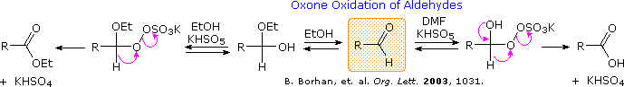
The ultimate in efficient and environmentally friendly catalytic oxidation was achieved recently by researchers at Université catholique de Louvain and Zeneca Agrochemicals. A copper catalyst, together with a hydrogen transfer agent is used to effect the air oxidation of 1º- and 2º-alcohols to aldehydes and ketones respectively. As shown in the following diagram, this method does not oxidize sulfides, and converts stereoisomeric allylic alcohols to carbonyl products without isomerization. Also the epimeric 2º-alcohols on the right are oxidized at the same rate and in excellent yield. By clicking on the diagram, a catalytic cycle for this reaction will be displayed.
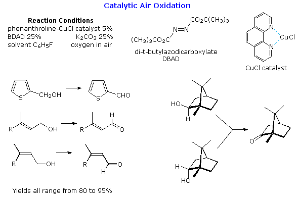
Examples of electrophilic addition reactions to various alkynes are shown in the following diagram. Whereas both 1-heptyne and 4-octyne were unreactive when treated (1 hr.) with a saturated solution of HCl in methylene chloride, using the polar hydrogen bonding solvent, acetic acid, and increasing the concentration of halide anion provided significant rate enhancement and stereoselectivity (examples 1-3). This is attributed to stabilization of an initially formed pi-complex (vide infra) and competition between AdE2 and AdE3 (Addition-Electrophilic-Bimolecular versus Addition-Electrophilic-Termolecular) mechanisms. Although chlorine addition to a terminal alkyne in methylene chloride gave an isomer mixture with the syn-addition isomer predominating (example 4), bromine addition was cleanly anti.
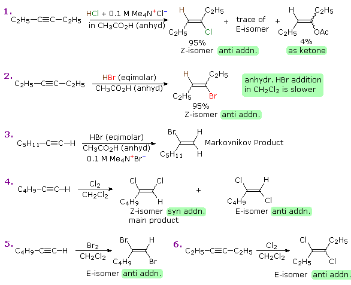
Reactions of similar alkynes conjugated with a phenyl group will be shown above by clicking on the diagram. Such reactions are often faster than those with alkyl substituted triple bonds, but are less stereoselective. Molecular rearrangements are seldom observed in any additions of HX to alkynes, suggesting that carbocation intermediates are not significant intermediates.
As noted in the discussion of alkene reactions, the initial interaction between an electrophile and an alkene or alkyne is the formation of a pi-complex, in which the electrophile accepts electrons from and becomes weakly bonded to the multiple bond. Such complexes are formed reversibly and may then reorganize to a reactive intermediate (e.g. a carbocation or a halonium cation) in a slower, rate-determining step. Subsequent reaction then leads to addition products. The following diagram shows the role of a pi-complex in reactions of alkenes with Brønsted acids and halogens. Polar solvents often help to stabilize these pi-complexes.
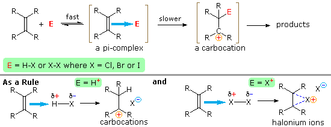
Equivalent pi complexes are expected to form in similar reactions of alkynes, as will be shown above by clicking on the diagram. Since the corresponding reactive intermediates from these complexes are relatively unstable, subsequent reactions will have higher activation energies and the sluggish reactivity of alkynes becomes understandable. In this respect, the relative stability of vinyl cations to their sp3 equivalents has been determined as follows:
It is possible that vinyl cations stabilized by conjugation with an aryl substituent are intermediates in HX addition to the alkynes in examples 7 & 8 (above). If so, the ion pair formed by collapse of the pi-complex may give syn addition by an AdE2 process or, with added halide anion, anti addition by an AdE3 mechanism. A similar partitioning of the pi-complex into syn and anti pathways takes place in many other cases. The addition of finely divided silica or alumina to methylene chloride solutions of alkynes has been found to accelerate addition of HX, generated in situ from SOX2 or AcX.